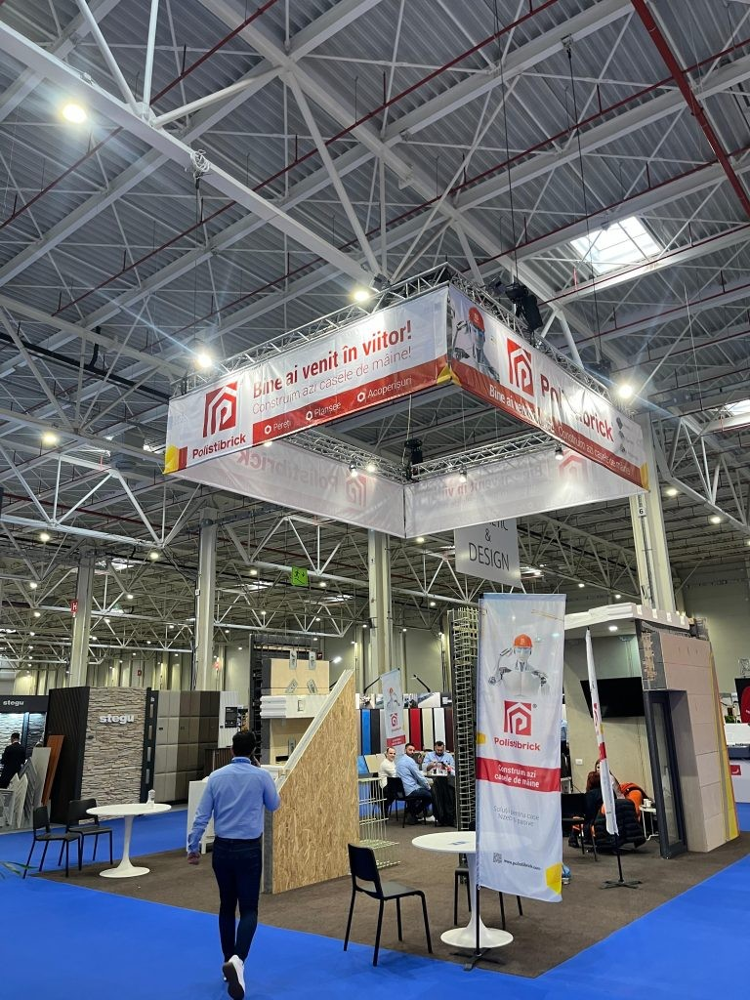
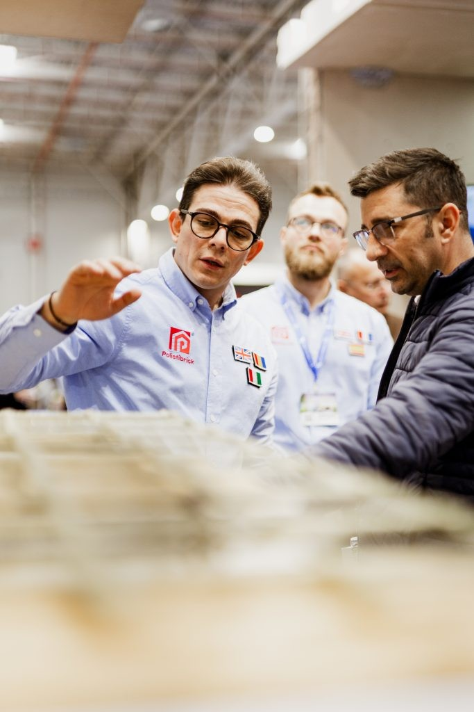

Du 20 au 23 mars 2025, Polistibrick est revenu au CONSTRUCT-AMBIENT EXPO – Romexpo, cette fois en tant que technologie validée, soutenue par des investisseurs, avec des applications concrètes dans le développement de logements modernes et économes en énergie.
📌 Sur notre stand au Pavillon B2, nous avons présenté :
• Des modèles fonctionnels de panneaux modulaires avec détails techniques intégrés,
• Des simulations de montage et des solutions pour l’efficacité énergétique,
• Des projets réels construits avec le système Polistibrick en Roumanie.
L’intérêt manifesté par les spécialistes et entrepreneurs a confirmé que le marché est prêt pour un système de construction offrant :
✅ Fiabilité structurelle
✅ Efficacité énergétique supérieure
✅ Montage rapide et standardisé
✅ Adaptabilité aux projets résidentiels, commerciaux ou industriels
🔧 Nos participations aux éditions 2024 et 2025 du CONSTRUCT-AMBIENT EXPO marquent une évolution naturelle de Polistibrick – d’un concept validé techniquement à une solution adoptée par le marché.
